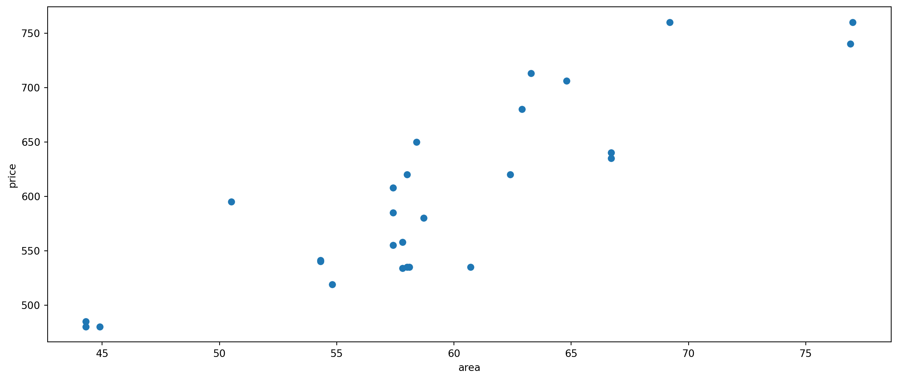
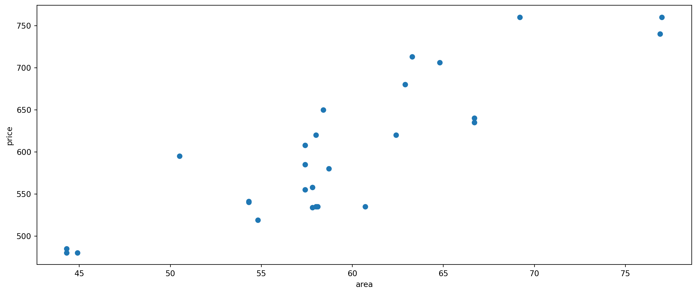
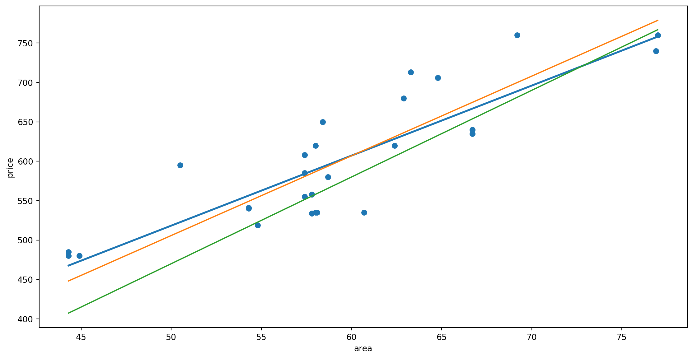

| area | price | |
|---|---|---|
| 0 | 62.9 | 680 |
| 1 | 44.3 | 485 |
| 2 | 57.4 | 555 |
| 3 | 62.4 | 620 |
| 4 | 57.4 | 585 |
| 5 | … | … |

function f(currentSlope,t) {
// 数据部分
const data = [
{x: 1, y: 2},
{x: 2, y: 1},
{x: 3, y: 4},
{x: 4, y: 3}
]
// 交互式滑动条
// 计算函数
function getPredictions(slope) {
return data.map(d => ({...d, y_pred: slope * d.x}))
}
function computeLoss(slope) {
return data.reduce((sum, d) => sum + (d.y - slope * d.x)**2, 0) / data.length
}
// 参数-损失曲线数据
const slopes = Array.from({length: 200}, (_, i) => -2 + i * 7/200)
const lossData = slopes.map(s => ({ slope: s, loss: computeLoss(s) }))
function mid(pred) {
return data.map((num,i)=>({x:(num.x+pred[i].x)/2, y:(num.y+pred[i].y_pred)/2,gap:Math.abs(num.y-pred[i].y_pred)}))
}
let m=mid(getPredictions(currentSlope))
// 第一个图：数据点和预测线
const plot1 = Plot.plot({
marks: [
Plot.frame(),
Plot.dot(data, {
x: "x",
y: "y",
fill: "steelblue",
r: 4
}),
Plot.line(getPredictions(currentSlope).concat([{x:0,y_pred:0*currentSlope},{x:5,y_pred:5*currentSlope}]) ,{
x: "x",
y: "y_pred",
stroke: "orange",
strokeWidth: 2,
}),
Plot.text(m,{x:"x",y:"y",text:(d) => `${d.gap.toFixed(2)}`,fontSize:16,dx:18}),
Plot.text([[0,0]],{dx:29,fontSize:16,text:[`y=${currentSlope.toFixed(2)}x`]}),
Plot.text([[2,7]],{dx:30,fontSize:16,text:[ `Cost=(${m[0].gap.toFixed(2)}^2+${m[1].gap.toFixed(2)}^2+${m[2].gap.toFixed(2)}^2+${m[3].gap.toFixed(2)}^2)/4=${computeLoss(currentSlope).toFixed(2)}`]}),
Plot.ruleX(data, {
x: "x",
y1: "y",
y2: d => currentSlope * d.x,
strokeWidth: 1.5,
strokeOpacity: 0.6,
}),
Plot.axisX({fontSize:16})
],
style: {fontSize: "16px"},
x: { domain: [0, 5], label: "x", },
y: { domain: [-2, 7.9], label: "y" },
width: 600,
height: 400,
// title: md`df $k$`
// title: `损失=(${m[0].gap.toFixed(2)}^2+${m[1].gap.toFixed(2)}^2+${m[2].gap.toFixed(2)}^2+${m[3].gap.toFixed(2)}^2)/4=${computeLoss(currentSlope).toFixed(2)}`
})
// 第二个图：损失函数曲线
const plot2 = Plot.plot({
marks: [
Plot.frame(),
Plot.line(lossData, {
x: "slope",
y: "loss",
stroke: "#984ea3",
strokeWidth: 1.5
}),
Plot.dot([{ slope: currentSlope, loss: computeLoss(currentSlope) }], {
x: "slope",
y: "loss",
fill: "#ff7f00",
r: 6
}),
Plot.axisX({fontSize:16})
],
style: {fontSize: "16px"},
x: { domain: [-2, 5],label: "参数 (k)" },
y: { domain: [-10, 125],label: "损失L(k;T) " },
width: 600,
height: 400
})
if(t==1) return plot1
else return plot2
}训练集 \(T=\{(1,2),(2,1),(3,4),(4,3)\}\)， \(m=4\)
决策函数：简单起见，假设 \(f(x)=kx\)
损失函数:
\[
\begin{align}
L(k;T)&=\frac{1}{4}((f(x_1)-y_1)^2+(f(x_2)-y_2)^2+(f(x_3)-y_3)^2+(f(x_4)-y_4)^2) \\&=\frac{1}{4}((k-2)^2+(2k-1)^2+(3k-4)^2+(4k-3)^2)\\&=\frac{1}{4}(30k^2-56k+30)
\end{align}
\]
解决最优化问题：求使得 \(L(k;T)\) 取得最小值的参数 \(k\) 值
0x01 线性回归